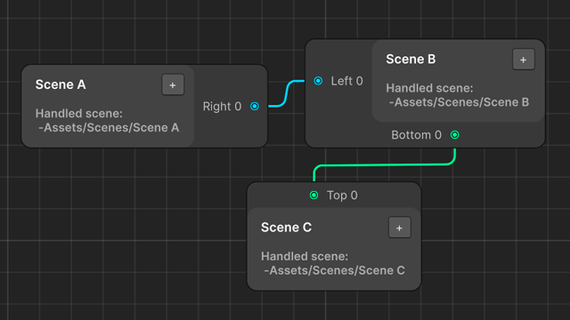
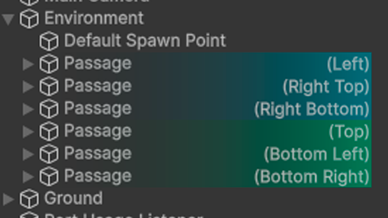
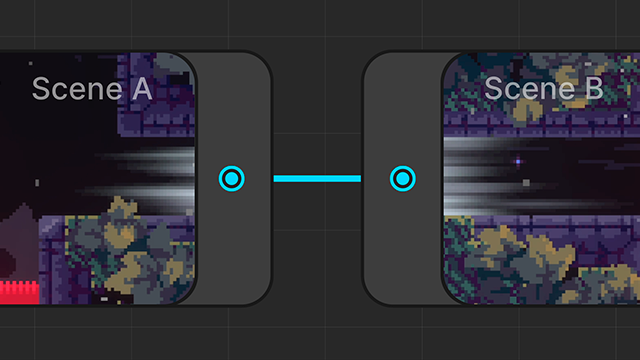

Управляйте структурой мира в одном окне!
Удобный визуальный редактор на основе нод для простого и понятного менеджмента сцен и их связей
Перейти в Asset Store ДокументацияОб инструменте
World Graph Editor позволяет создавать и управлять связями между сценами через наглядный граф. В разы ускорьте разработку и тестирование игр с большим количеством сцен, а создание скриншот-превью поможет разработчику лучше ориентироваться даже в большом графе.
Как использовать

Шаг 1. Создание связей в графе
Перетащите сцены в граф, чтобы создать ноды. Свяжите их между собой для формирования структуры мира. При необходимости, настройте направления связей.

Шаг 2. Настройка сцены
Для каждого объекта, выступающего в качестве прохода на другую сцену, укажите соответствующий порт на графе.

Шаг 3. Демонстрация
Запустите игру и войдите в проход. Сразу после этого будет загружена необходимая сцена.
Основные функции
- Интуитивно понятное и простое в использовании окно редактора для создания графов
- Поддержка трех типов связей между сценами: Undirected, Shortcut, One-Way
- Визуальное выделение объектов-проходов в окне Inspector
- Автоматическое добавление сцен в Build Settings
- Валидация графа при входе в Play Mode и сборке проекта
- Поддержка 2D и 3D проектов
- Встроенный объект - TransitionManager, отвечающий за переходы между сценами
- Создание скриншот-превью для каждой ноды
- Поддержка написания собственных компонентов
- Поддержка собственных тестов для сцен
- Поддержка ожидания выполнения асинхронных задач между фазами перехода
- Поддержка установки задержки между фазами перехода
- Поддержка автоматического создания объекта игрока